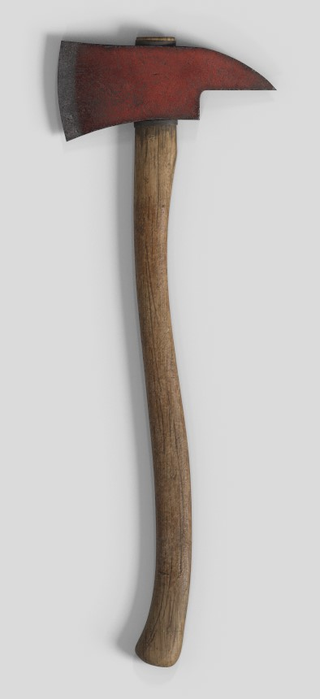
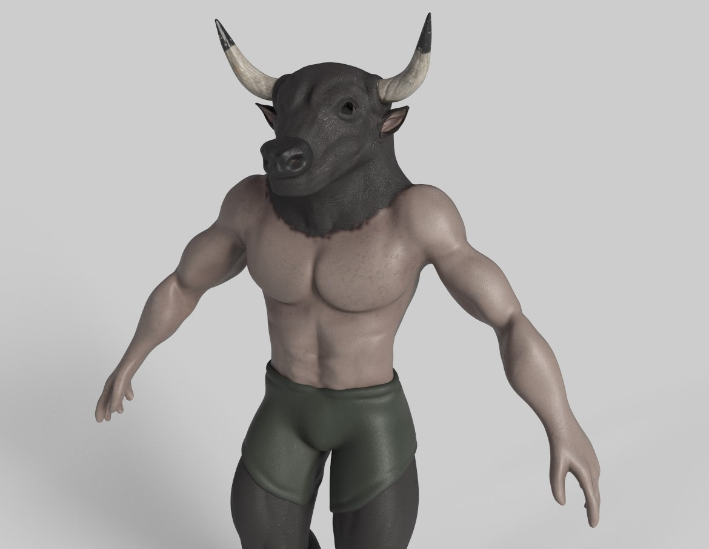

Hacha
Herramientas: 3Ds Max y Adobe Substance Painter
Modelo creado para el proyecto Progreso.

Galería de modelado, escenarios y creación visual.
En esta galería se muestran diferentes ejemplos de trabajos relacionados con el modelado 3D, la creación de escenarios y el diseño de elementos para videojuegos.
Herramientas: 3Ds Max y Adobe Substance Painter
Modelo creado para el proyecto Progreso.

Herramientas: ZBrush y Adobe Substance Painter
Enemigo protagonista del proyecto Progreso.
